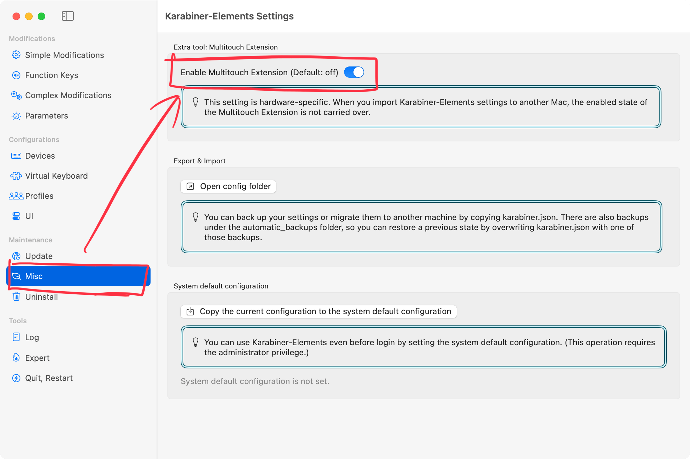

<div>Supported shortcuts</div>

<table class="table mt-2">
  <tbody>
    <tr>
      <th>Key</th>
      <th>Function</th>
    </tr>
    <tr>
      <td><kbd>F</kbd>, <kbd>J</kbd>, <kbd>SPACE</kbd></td>
      <td>Mouse left button</td>
    </tr>
    <tr>
      <td><kbd>D</kbd>, <kbd>K</kbd></td>
      <td>Mouse right button</td>
    </tr>
    <tr>
      <td><kbd>G</kbd></td>
      <td>Next (on web browsers)</td>
    </tr>
    <tr>
      <td><kbd>H</kbd></td>
      <td>Previous (on web browsers)</td>
    </tr>
    <tr>
      <td><kbd>W</kbd></td>
      <td>Window close</td>
    </tr>
  </tbody>
</table>

<div class="mt-2">
  This setting requires Multitouch Extension. Please enable Multitouch Extension from Karabiner-Elements Settings &gt; Misc.
  <div class="p-4">
    
  </div>
</div>
